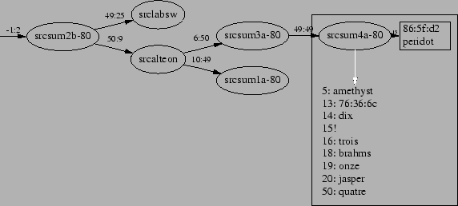
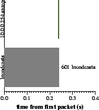

| 1 Introduction
Switched Ethernets are popular for their ability to isolate traffic
between different pairs of hosts for performance and security. The increase
in aggregate bandwidth allows switched networks to scale larger than broadcast
networks using hubs. This larger scale makes switched networks more vulnerable
to common network pathologies. The pathologies we address in this paper
include:
1) broadcast storms
2) ARP fights
Both pathologies exist in traditional, shared broadcast media, but are
more relevant in switched networks because of their large scale.
2 Pathologies
Broadcast storms occur when a buggy or malevolent host emits a continuous
stream of broadcast packets. Broadcast packets cannot be switched and must
traverse each link in the network. This allows a single host to execute
a denial-of-service attack on all other hosts on the same subnet.
ARP fights occur when two hosts with different MAC (layer 2 hardware)
addresses conflict for the same IP address. ARP is the protocol used to
map IP addresses to MAC addresses for transport of IP traffic over a local
network. It is not suited to resolving conflicting responses. This often
happens due to misconfiguration or buggy DHCP implementations, and could
be used by a misbehaving host as part of a man-in-the-middle attack.
We have developed a tool, named Vincent, to determine the source of
broadcast storms and disable the offending network segment. The tool understands
the switched network topology using a standard SNMP interface and minimal
information. Another tool monitors the broadcast traffic associated with
ARP requests, and verifies the stability and lack of conflict in the IP
to MAC address mapping. Both tools alert the system administrator via electronic
mail, and, in the case of broadcast storms, take action.
3 Topology Discovery
Understanding the switched network topology is important for two reasons.
First, it helps in deciding which port to disable when misbehavior occurs.
Second, it allows our tool to help in physically locating misbehaving hosts.
Our approach uses the forwarding database (FDB) of each switch. The
FDB maps each MAC address to a switch output port, analogous to the forwarding
table of an IP router. Since switch topology is restricted to that of a
tree, either by physical connection or by use of the spanning tree protocol,
topology discovery is the process of recovering that tree.
|  |
Figure 1: Sample, abridged, topology.
4 Broadcast Storm Detection
Broadcast storms are detected and localized in two ways. First, a packet
sniffer in non-promiscuous mode can see all broadcast traffic. Seeing more
than
packets in
seconds implies that a broadcast storm is underway. It is likely that the
packet is correctly addressed, and that knowing the source mac address
and the network topology will point to a particular switch port to be disabled.
If the packet sniffer fails at determining the source, possibly because
of incorrectly formatted packets or because the misbehaving host has not
been seen on the network before, the per-port broadcast ingress packet
counters can be used to trace broadcast packets to their source. This is,
however, a less timely detector, since retrieving these counters from the
switch is a somewhat heavyweight operation, and thus cannot be executed
often.
5 Broadcast Storm Resolution
After enough packets have been seen over a 1 second interval to warrant
action, the source's port is disabled. The port will be reenabled after
the passage of an interval, which doubles each time the source port is
disabled.
|  |
Figure 2: Shutoff of broadcast traffic
6 ARP Fight Detection
The packet sniffer watches for ARP requests, which are, by nature, broadcast
to all hosts. Vincent enqueues both the source and destination IP addresses
from the ARP request for verification. This queue is used to reduce the
overall traffic load imposed on the network by Vincent.
Every second, Vincent chooses the next IP, and sends an ARP request.
If two conflicting responses are received, then two machines have decided
to use the same IP address. Vincent then notifies the administrator by
electronic mail.
7 ARP Fight Resolution
It is possible for Vincent to choose one of the conflicting hosts to
stay in the network and disable others. However, the best policy is not
clear. Should the host having the IP address for the longest time be entitled
to continue using it? Probably, but it might be an address allocated by
DHCP, for which the host (for any number of reasons) has not properly renewed
the lease. Without a better understanding of what the DHCP server intends,
our response is limited to notifying the administrator.
There are some interesting possibilities in this domain.
First, the ISC DHCP server includes a flat text file containing its
IP to MAC address mappings. Any that contradict this list would be disabled.
Ideally, the DHCP protocol would include provision for such verification.
Second, some institutions keep a list of MAC addresses that are allowed
to obtain an IP address via DHCP. This list includes the user who owns
the machine, which would make it particularly easy to notify the parties
involved.
8 Conclusion
Our tool, Vincent, is able to recover the topology of a switched ethernet
using commonly available information from SNMP. This feature alone makes
it particularly useful to network administrators interested in planning
improvements to the network infrastructure.
With this understanding of host location, it becomes possible to disable
the ports of these switches that connect to misbehaving hosts. By disconnecting
these hosts, it is possible to preserve connectivity between correctly-behaving
hosts. Vincent disables some misbehaving hosts, and reports misbehavior
to the network administrator.
|